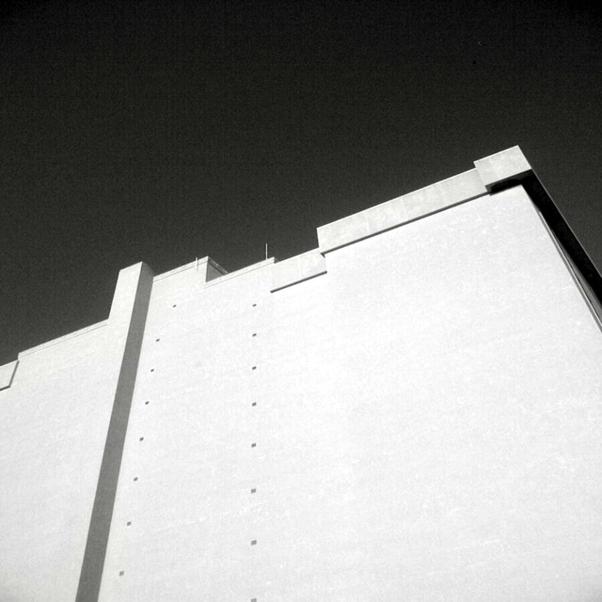

I.
I think of you and I think TALL. As we danced, the buttons on your shirt front Pressed circles on my face, Your angular cheekbones a sharp contrast To my dimpled softness.
The hormone-sweet smell of youth Seeped through the starched white cotton of your shirt As we waltzed carefree and young of heart To the wedding altar. We laughed often and joked of Growing old together.
I was radiant and dizzy with love You called me your princess in lace veil And white ruffles.
II.
Through open windows gossamer curtains Blew freely in the wind. The white ruffles waved in celebration As we joined in primal mating on your grandmother's Four poster bed. Youthful lust waned as the babies came, One-two-three robust and red cheeked.
Hell-bent on perfection I followed modern marriage manuals to the letter. White ruffles were replaced by blue jeans and aprons. You never did learn to like tuna in a casserole.
And I never ever said no To your fumbling hands sneaking the warmth of my body's secrets Under hidden cover of the night. Other nights I tuned in for the sound of your truck Purring home at last in the driveway.
III.
One 2am you covered me with wafting dollar bills Won in a craps game, And I wondered what that had to do with the truck business, But I wasn't going to harp like my mother. They said she killed my father with a heart attack. So I said nothing. Your golden wedding band flew out of the window with a beer can One blistery winter night You said. Your fingers were slim and shrunk from the cold You said.
IV.
Was it 1987 we celebrated the new year In the Laundromat? We toasted new beginnings Over the water sloshing and the Whump-whump of tennis shoes in the dryer. What followed was the first job lost. (Due to missing company funds I was told.) T'was not the last. The spiral hastened Down, Always accompanied by a Schlitz Tallboy Gripped tightly in your bony knuckles Until the cool metal container became indistinguishable From your hand.
V.
Frantic for a solution, One night I sent the children away and Served you steak and wine in unfamiliar candlelight that Spiked eerie shadows over children's toys and the worn out high chair. I used all the woman-tricks I knew To ease the frown in your face. I listened. I laughed. I cajoled. I flirted. I fucked, But I could not compete with the golden liquid brew. It gave you seductive solace I could not. I was your judge and jury and It had become your understanding, Forever faithless friend. My Pollyanna smile became a frozen grimace mask.. And I looked for shabby comfort wherever I could. You never even noticed.
Finally I fled,
We become one more divorce statistic. Dated May 18th.
VI.
The last time I saw you, You sat heavily in our easy chair, Gray trousers dark-stained and urine-damp. Your head hung low. Your watery blue eyes pleaded for help as the coffee cup trembled In your long slender fingers. Our children gaped in adolescent horror at the shrunken visage Of their hero-daddy. I didn't know what to do! I couldn't return you to what you had become. Spending nights in a cold borrowed car Writing hot checks Sleeping in a cemetery surrounded by metal vaults and stone pillars. You surrendered meekly enough as Our son dressed you up. I tucked a clean white hanky in your pocket And sent you home to the first woman who ever loved you.
Safely tucked away in my file cabinet along with car titles, Life insurance policies, and 20-year roof warranties is The Coroner's Report. "Self-Inflicted gunshot wound" States the ragged piece of paper. The death notice of white ruffles' dreams is Dated May 18th.
VII.
Today I live in a reasonable world with reality as my companion. My dreamy dimples have deepened with age Thank God I no longer need fairy tale heroes.
A pale flag flaps wildly in the winter wind. White lilacs in the first blush of spring,
White ruffle dreams into my grown-up mind. Then The warm body next to me moves closer In the rustle of the night and I imperfectly love an imperfect man.
Gratitude bathes me in a rosy glow As my heart smiles in the night. I think of me and I know: Blessed. I think of you and I pray: Peace.
Written by Mary MacKenzie. (RIP) Reprinted with permission.
